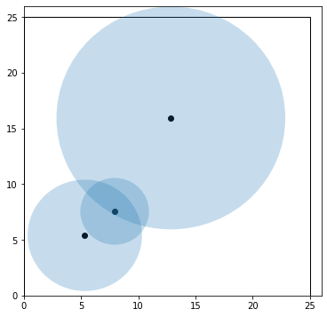
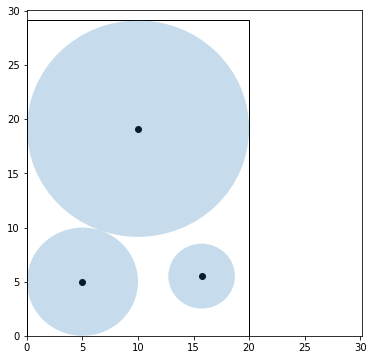

7.1. Convexity Revisited#
# This code cell installs packages on Colab
import sys
if "google.colab" in sys.modules:
!wget "https://raw.githubusercontent.com/ndcbe/CBE60499/main/notebooks/helper.py"
import helper
helper.install_idaes()
helper.install_ipopt()
helper.install_glpk()
helper.download_figures(['pack1.png','pack2.png','pack3.png'])
import pandas as pd
import pyomo.environ as pyo
7.1.1. Background#
Reference: Beginning of Chapter 4 in Biegler (2010)
7.1.1.1. Canonical Nonlinear Program#

7.1.1.2. Types of Constrained Optimal Solutions#


7.1.1.3. Key Questions#

7.1.2. Convexity for Constrained Optimization#
Reference: Section 4.1 in Biegler (2010)


7.1.3. Circle Packing Example#
Reference: Section 4.1 in Biegler (2010)
Motivating Question: Is this problem convex?
What is the smallest rectangle you can use to enclose three given circles? Reference: Example 4.4 in Biegler (2010).

7.1.3.1. Optimization Model and Pyomo Implementation#
The following optimization model is given in Biegler (2010):


import random
import numpy as np
import matplotlib.pyplot as plt
import matplotlib.patches as mpatches
def create_circle_model(circle_radii):
''' Create circle optimization model in Pyomo
Arguments:
circle_radii: dictionary with keys=circle name and value=radius (float)
Returns:
model: Pyomo model
'''
# Number of circles to consider
n = len(circle_radii)
# Create a concrete Pyomo model.
model = pyo.ConcreteModel()
# Initialize index for circles
model.CIRCLES = pyo.Set(initialize = circle_radii.keys())
# Create parameter
model.R = pyo.Param(model.CIRCLES, domain=pyo.PositiveReals, initialize=circle_radii)
# Create variables for box
model.a = pyo.Var(domain=pyo.PositiveReals)
model.b = pyo.Var(domain=pyo.PositiveReals)
# Set objective
model.obj = pyo.Objective(expr=2*(model.a + model.b), sense = pyo.minimize)
# Create variables for circle centers
model.x = pyo.Var(model.CIRCLES, domain=pyo.PositiveReals)
model.y = pyo.Var(model.CIRCLES, domain=pyo.PositiveReals)
# "In the box" constraints
def left_x(m,c):
return m.x[c] >= model.R[c]
model.left_x_con = pyo.Constraint(model.CIRCLES, rule=left_x)
def left_y(m,c):
return m.y[c] >= model.R[c]
model.left_y_con = pyo.Constraint(model.CIRCLES, rule=left_y)
def right_x(m,c):
return m.x[c] <= m.b - model.R[c]
model.right_x_con = pyo.Constraint(model.CIRCLES, rule=right_x)
def right_y(m,c):
return m.y[c] <= m.a - model.R[c]
model.right_y_con = pyo.Constraint(model.CIRCLES, rule=right_y)
# No overlap constraints
def no_overlap(m,c1,c2):
if c1 < c2:
return (m.x[c1] - m.x[c2])**2 + (m.y[c1] - m.y[c2])**2 >= (model.R[c1] + model.R[c2])**2
else:
return pyo.Constraint.Skip
model.no_overlap_con = pyo.Constraint(model.CIRCLES, model.CIRCLES, rule=no_overlap)
return model
def initialize_circle_model(model, a_init=25, b_init=25):
''' Initialize the x and y coordinates using uniform distribution
Arguments:
a_init: initial value for a (default=25)
b_init: initial value for b (default=25)
Returns:
Nothing. But per Pyomo scoping rules, the input argument `model`
can be modified in this function.
'''
# Initialize
model.a = 25
model.b = 25
for i in model.CIRCLES:
# Adding circle radii ensures the remains in the >0, >0 quadrant
model.x[i] = random.uniform(0,10) + model.R[i]
model.y[i] = random.uniform(0,10) + model.R[i]
Next, we will create a dictionary containing the circle names and radii values.
# Create dictionary with circle data
circle_data = {'A':10.0, 'B':5.0, 'C':3.0}
circle_data
{'A': 10.0, 'B': 5.0, 'C': 3.0}
# Access the keys
circle_data.keys()
dict_keys(['A', 'B', 'C'])
Now let’s create the model.
# Create model
model = create_circle_model(circle_data)
And let’s initialize the model.
# Initialize model
initialize_circle_model(model)
model.pprint()
2 Set Declarations
CIRCLES : Size=1, Index=None, Ordered=Insertion
Key : Dimen : Domain : Size : Members
None : 1 : Any : 3 : {'A', 'B', 'C'}
no_overlap_con_index : Size=1, Index=None, Ordered=True
Key : Dimen : Domain : Size : Members
None : 2 : CIRCLES*CIRCLES : 9 : {('A', 'A'), ('A', 'B'), ('A', 'C'), ('B', 'A'), ('B', 'B'), ('B', 'C'), ('C', 'A'), ('C', 'B'), ('C', 'C')}
1 Param Declarations
R : Size=3, Index=CIRCLES, Domain=PositiveReals, Default=None, Mutable=False
Key : Value
A : 10.0
B : 5.0
C : 3.0
4 Var Declarations
a : Size=1, Index=None
Key : Lower : Value : Upper : Fixed : Stale : Domain
None : 0 : 25 : None : False : False : PositiveReals
b : Size=1, Index=None
Key : Lower : Value : Upper : Fixed : Stale : Domain
None : 0 : 25 : None : False : False : PositiveReals
x : Size=3, Index=CIRCLES
Key : Lower : Value : Upper : Fixed : Stale : Domain
A : 0 : 12.841552708011381 : None : False : False : PositiveReals
B : 0 : 5.317917334950976 : None : False : False : PositiveReals
C : 0 : 7.92668839728193 : None : False : False : PositiveReals
y : Size=3, Index=CIRCLES
Key : Lower : Value : Upper : Fixed : Stale : Domain
A : 0 : 15.93994957385218 : None : False : False : PositiveReals
B : 0 : 5.402476587728794 : None : False : False : PositiveReals
C : 0 : 7.556772365151705 : None : False : False : PositiveReals
1 Objective Declarations
obj : Size=1, Index=None, Active=True
Key : Active : Sense : Expression
None : True : minimize : 2*(a + b)
5 Constraint Declarations
left_x_con : Size=3, Index=CIRCLES, Active=True
Key : Lower : Body : Upper : Active
A : 10.0 : x[A] : +Inf : True
B : 5.0 : x[B] : +Inf : True
C : 3.0 : x[C] : +Inf : True
left_y_con : Size=3, Index=CIRCLES, Active=True
Key : Lower : Body : Upper : Active
A : 10.0 : y[A] : +Inf : True
B : 5.0 : y[B] : +Inf : True
C : 3.0 : y[C] : +Inf : True
no_overlap_con : Size=3, Index=no_overlap_con_index, Active=True
Key : Lower : Body : Upper : Active
('A', 'B') : 225.0 : (x[A] - x[B])**2 + (y[A] - y[B])**2 : +Inf : True
('A', 'C') : 169.0 : (x[A] - x[C])**2 + (y[A] - y[C])**2 : +Inf : True
('B', 'C') : 64.0 : (x[B] - x[C])**2 + (y[B] - y[C])**2 : +Inf : True
right_x_con : Size=3, Index=CIRCLES, Active=True
Key : Lower : Body : Upper : Active
A : -Inf : x[A] - (b - 10.0) : 0.0 : True
B : -Inf : x[B] - (b - 5.0) : 0.0 : True
C : -Inf : x[C] - (b - 3.0) : 0.0 : True
right_y_con : Size=3, Index=CIRCLES, Active=True
Key : Lower : Body : Upper : Active
A : -Inf : y[A] - (a - 10.0) : 0.0 : True
B : -Inf : y[B] - (a - 5.0) : 0.0 : True
C : -Inf : y[C] - (a - 3.0) : 0.0 : True
13 Declarations: CIRCLES R a b obj x y left_x_con left_y_con right_x_con right_y_con no_overlap_con_index no_overlap_con
7.1.3.2. Visualize Initial Point#
Next, we’ll define a function to plot the solution (or initial point)
# Plot initial point
def plot_circles(m):
''' Plot circles using data in Pyomo model
Arguments:
m: Pyomo concrete model
Returns:
Nothing (but makes a figure)
'''
# Create figure
fig, ax = plt.subplots(1,figsize=(6,6))
# Adjust axes
l = max(m.a.value,m.b.value) + 1
ax.set_xlim(0,l)
ax.set_ylim(0,l)
# Draw box
art = mpatches.Rectangle((0,0), width=m.b.value, height=m.a.value,fill=False)
ax.add_patch(art)
# Draw circles and mark center
for i in m.CIRCLES:
art2 = mpatches.Circle( (m.x[i].value,m.y[i].value), radius=m.R[i],fill=True,alpha=0.25)
ax.add_patch(art2)
plt.scatter(m.x[i].value,m.y[i].value,color='black')
# Show plot
plt.show()
plot_circles(model)

7.1.3.3. Solve and Inspect the Solution#
# Specify the solver
solver = pyo.SolverFactory('ipopt')
# Solve the model
results = solver.solve(model, tee = True)
Ipopt 3.13.2:
******************************************************************************
This program contains Ipopt, a library for large-scale nonlinear optimization.
Ipopt is released as open source code under the Eclipse Public License (EPL).
For more information visit http://projects.coin-or.org/Ipopt
******************************************************************************
This is Ipopt version 3.13.2, running with linear solver ma27.
Number of nonzeros in equality constraint Jacobian...: 0
Number of nonzeros in inequality constraint Jacobian.: 30
Number of nonzeros in Lagrangian Hessian.............: 12
Total number of variables............................: 8
variables with only lower bounds: 8
variables with lower and upper bounds: 0
variables with only upper bounds: 0
Total number of equality constraints.................: 0
Total number of inequality constraints...............: 15
inequality constraints with only lower bounds: 9
inequality constraints with lower and upper bounds: 0
inequality constraints with only upper bounds: 6
iter objective inf_pr inf_du lg(mu) ||d|| lg(rg) alpha_du alpha_pr ls
0 1.0000000e+02 7.46e+01 1.06e+00 -1.0 0.00e+00 - 0.00e+00 0.00e+00 0
1 1.0050650e+02 4.98e+01 4.22e+00 -1.0 2.36e+01 - 1.84e-01 1.30e-01h 1
2 1.0015862e+02 3.01e+01 2.32e+00 -1.0 5.24e+00 - 8.18e-01 3.67e-01h 1
3 9.9730828e+01 1.33e+01 1.16e+00 -1.0 4.96e+00 - 7.51e-01 4.53e-01h 1
4 9.8213893e+01 8.23e+00 1.08e+00 -1.0 2.46e+01 - 2.93e-01 7.07e-02f 1
5 9.8307816e+01 1.84e+00 3.42e-01 -1.0 7.81e+00 - 1.00e+00 6.57e-01h 1
6 9.8901802e+01 0.00e+00 1.06e-02 -1.0 1.80e+01 - 1.00e+00 1.00e+00h 1
7 9.8393352e+01 0.00e+00 3.30e-03 -1.7 9.37e+00 - 1.00e+00 1.00e+00h 1
8 9.8405011e+01 0.00e+00 1.08e-03 -1.7 4.38e+01 - 1.00e+00 1.00e+00h 1
9 9.8405025e+01 0.00e+00 1.17e-04 -1.7 7.44e+00 - 1.00e+00 1.00e+00h 1
iter objective inf_pr inf_du lg(mu) ||d|| lg(rg) alpha_du alpha_pr ls
10 9.8405027e+01 0.00e+00 5.74e-07 -1.7 1.52e+00 - 1.00e+00 1.00e+00h 1
11 9.8284703e+01 0.00e+00 4.42e-05 -3.8 2.93e-01 - 1.00e+00 9.98e-01h 1
12 9.8284281e+01 0.00e+00 2.33e-09 -5.7 2.63e-03 - 1.00e+00 1.00e+00h 1
13 9.8284270e+01 0.00e+00 1.33e-13 -8.6 2.80e-05 - 1.00e+00 1.00e+00h 1
Number of Iterations....: 13
(scaled) (unscaled)
Objective...............: 9.8284270438747228e+01 9.8284270438747228e+01
Dual infeasibility......: 1.3347017888941731e-13 1.3347017888941731e-13
Constraint violation....: 0.0000000000000000e+00 0.0000000000000000e+00
Complementarity.........: 2.5071615765896930e-09 2.5071615765896930e-09
Overall NLP error.......: 2.5071615765896930e-09 2.5071615765896930e-09
Number of objective function evaluations = 14
Number of objective gradient evaluations = 14
Number of equality constraint evaluations = 0
Number of inequality constraint evaluations = 14
Number of equality constraint Jacobian evaluations = 0
Number of inequality constraint Jacobian evaluations = 14
Number of Lagrangian Hessian evaluations = 13
Total CPU secs in IPOPT (w/o function evaluations) = 0.004
Total CPU secs in NLP function evaluations = 0.000
EXIT: Optimal Solution Found.
Next, we can inspect the solution. Because Pyomo is a Python extension, we can use Pyoth (for loops, etc.) to programmatically inspect the solution.
# Print variable values
print("Name\tValue")
for c in model.component_data_objects(pyo.Var):
print(c.name,"\t", pyo.value(c))
# Plot solution
plot_circles(model)
Name Value
a 29.142135416184022
b 19.999999803189596
x[A] 9.99999990193744
x[B] 4.999999953543133
x[C] 15.734851787229463
y[A] 19.142135514931184
y[B] 4.999999951252124
y[C] 5.517617033892999

# Print constraints
for c in model.component_data_objects(pyo.Constraint):
print(c.name,"\t", pyo.value(c.lower),"\t", pyo.value(c.body),"\t", pyo.value(c.upper))
left_x_con[A] 10.0 9.99999990193744 None
left_x_con[B] 5.0 4.999999953543133 None
left_x_con[C] 3.0 15.734851787229463 None
left_y_con[A] 10.0 19.142135514931184 None
left_y_con[B] 5.0 4.999999951252124 None
left_y_con[C] 3.0 5.517617033892999 None
right_x_con[A] None 9.874784367980283e-08 0.0
right_x_con[B] None -9.999999849646462 0.0
right_x_con[C] None -1.2651480159601327 0.0
right_y_con[A] None 9.87471615587765e-08 0.0
right_y_con[B] None -19.142135464931897 0.0
right_y_con[C] None -20.624518382291022 0.0
no_overlap_con[A,B] 225.0 224.99999778541908 None
no_overlap_con[A,C] 169.0 218.51602998638847 None
no_overlap_con[B,C] 64.0 115.5049713354404 None
7.1.3.4. Reinitialize and Resolve#
Reinitialize the model, plot the initial point, resolve, and plot the solution. Is there more than one solution?
# Initialize and print the model
initialize_circle_model(model)
# Plot initial point
plot_circles(model)

# Solve the model
results = solver.solve(model, tee = True)
Ipopt 3.13.2:
******************************************************************************
This program contains Ipopt, a library for large-scale nonlinear optimization.
Ipopt is released as open source code under the Eclipse Public License (EPL).
For more information visit http://projects.coin-or.org/Ipopt
******************************************************************************
This is Ipopt version 3.13.2, running with linear solver ma27.
Number of nonzeros in equality constraint Jacobian...: 0
Number of nonzeros in inequality constraint Jacobian.: 30
Number of nonzeros in Lagrangian Hessian.............: 12
Total number of variables............................: 8
variables with only lower bounds: 8
variables with lower and upper bounds: 0
variables with only upper bounds: 0
Total number of equality constraints.................: 0
Total number of inequality constraints...............: 15
inequality constraints with only lower bounds: 9
inequality constraints with lower and upper bounds: 0
inequality constraints with only upper bounds: 6
iter objective inf_pr inf_du lg(mu) ||d|| lg(rg) alpha_du alpha_pr ls
0 1.0000000e+02 1.37e+02 1.00e+00 -1.0 0.00e+00 - 0.00e+00 0.00e+00 0
1 1.0276645e+02 6.44e+01 6.62e-01 -1.0 7.31e+00 - 6.14e-01 4.44e-01h 1
2 1.0566116e+02 1.85e+01 1.63e+00 -1.0 2.55e+00 0.0 8.96e-01 6.48e-01h 1
3 1.0612677e+02 0.00e+00 5.99e-01 -1.0 1.46e+00 -0.5 1.00e+00 1.00e+00h 1
4 1.0329539e+02 0.00e+00 3.22e-01 -1.0 2.52e+00 -1.0 1.00e+00 6.55e-01f 1
5 1.0326145e+02 0.00e+00 3.12e-01 -1.0 1.93e+00 - 8.26e-01 1.00e+00h 1
6 1.0237284e+02 0.00e+00 1.44e-01 -1.7 4.25e+00 -1.4 6.57e-01 7.24e-01f 1
7 9.9794889e+01 0.00e+00 1.92e-01 -1.7 1.94e+00 -1.0 9.54e-01 1.00e+00h 1
8 9.8743606e+01 0.00e+00 9.11e-01 -1.7 3.49e+01 -1.5 2.76e-01 2.60e-02f 1
9 9.8483796e+01 0.00e+00 1.74e-01 -1.7 4.32e+00 - 9.92e-01 8.22e-01h 1
iter objective inf_pr inf_du lg(mu) ||d|| lg(rg) alpha_du alpha_pr ls
10 9.8455971e+01 0.00e+00 9.38e-02 -1.7 1.73e+02 - 9.38e-01 3.53e-01f 1
11 9.8404443e+01 0.00e+00 2.67e-03 -1.7 9.65e+00 - 1.00e+00 1.00e+00h 1
12 9.8405024e+01 0.00e+00 2.10e-05 -1.7 4.30e+00 - 1.00e+00 1.00e+00h 1
13 9.8300696e+01 0.00e+00 1.14e-05 -2.5 2.47e-01 - 1.00e+00 1.00e+00h 1
14 9.8285160e+01 0.00e+00 2.64e-07 -3.8 3.60e-02 - 1.00e+00 1.00e+00h 1
15 9.8284281e+01 0.00e+00 1.27e-09 -5.7 3.07e-03 - 1.00e+00 1.00e+00h 1
16 9.8284270e+01 0.00e+00 1.75e-12 -8.6 2.76e-04 - 1.00e+00 1.00e+00h 1
Number of Iterations....: 16
(scaled) (unscaled)
Objective...............: 9.8284270438747257e+01 9.8284270438747257e+01
Dual infeasibility......: 1.7491657667044265e-12 1.7491657667044265e-12
Constraint violation....: 0.0000000000000000e+00 0.0000000000000000e+00
Complementarity.........: 2.5240899380720466e-09 2.5240899380720466e-09
Overall NLP error.......: 2.5240899380720466e-09 2.5240899380720466e-09
Number of objective function evaluations = 17
Number of objective gradient evaluations = 17
Number of equality constraint evaluations = 0
Number of inequality constraint evaluations = 17
Number of equality constraint Jacobian evaluations = 0
Number of inequality constraint Jacobian evaluations = 17
Number of Lagrangian Hessian evaluations = 16
Total CPU secs in IPOPT (w/o function evaluations) = 0.004
Total CPU secs in NLP function evaluations = 0.000
EXIT: Optimal Solution Found.
# Plot solution
plot_circles(model)

7.1.4. Take Away Messages#
Nonlinear programs may be nonconvex. For nonconvex problems, there often exists many local optima that are not also global optima.
Initialization is really important in optimization problems with nonlinear objectives or constraints!